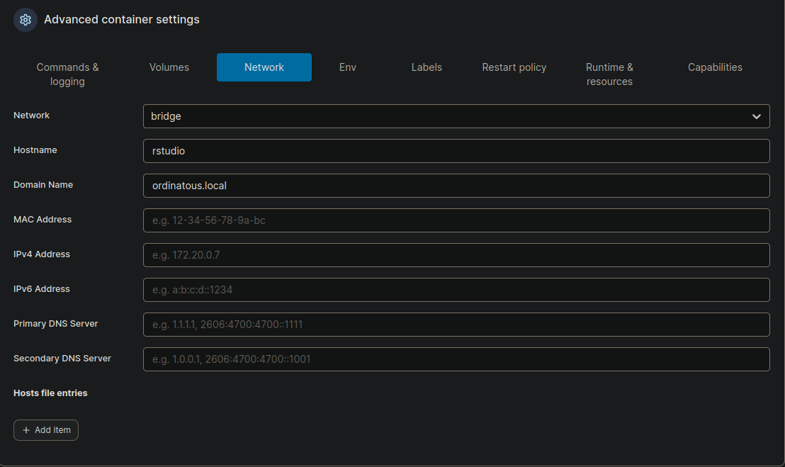
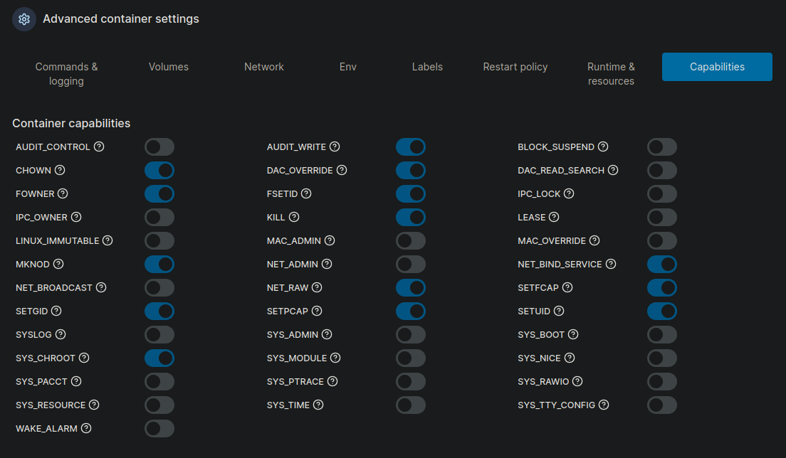
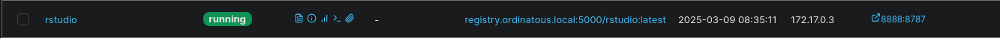
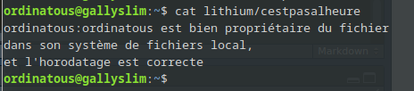

Présentation de Rstudio
Rstudio est un IDE permettant de faire du R et d’√©diter R Markdown pour inclure du code R dans le document, de l’ex√©cuter et d’avoir le rendu dans la page.
Cet IDE est plein de fonctionnalités que je détaillerais dans un autre article.
Contexte
J’avais utilis√© Rstudio, il y a √† peu 2 ans , pour faire du R et √©diter mon blog ; et n’ayant pas vraiment pris le temps de lire le mode d’emploi , c’√©tait un v√©ritable chantier dans le dossier de travail , et 2 ou 3 ans plus tard , je ne me souvenais plus en j’en √©tais.
En voulant r√© installer Rstudio , et reprendre le projet ou il en √©tait, je constatais que c’√©tait toujours le bazars . Je me suis souvenu qu’il y avait des √©quipes qui travaillaient sur du rstudio en docker. Avec des dockers √† la carte avec des packages R pr√©-install√©s.
Comme si , faire tourner rstudio en docker allait arranger mes affaires… finalement oui , j’ai fini par comprendre comment bien m’en servir .
Bref, j’ai adapt√© une image de RStudio-server pour y installer le package blogdown.
C’est parti de l’article de Dave Tang qui trait√© de rstudio-server.
Adaptation
Je vais simplement reprendre son Dockerfiles , et ajouter blogdown dans les packages, et supprimer des éléments qui sont adaptés à son environnement à lui .
Il me manque tout de m√™me la persistance des packages R , mais ce n’est pas grave, on peut reconstruire une image avec les packages manquant , le principe ici √©tant d’avoir un RStudio-server avec blogdown.
Le Dockerfiles
L’image de base est celle d√©velopp√©e par l’√©quipe rocker, c’est une image optimis√© construite sur une debian like. On appelle cette image avec FROM rocker/rstudio:4.2.3
Viennent ensuite les LABEL.
La s√©rie de commande envoy√©e au syst√®me de base debian (c’est une ubuntu en r√©alit√©), avec RUN apt pour la mise √† jour du syst√®me , et l’installation des packages utiles, tel que git , pandoc (c’est un convertisseur de document tr√®s puissant), il y a une version pandoc en ligne.
Les librairies de chiffrement openssl, de compression lzma, de manipulation d’images libmagick.
Et l’installation des packages R qui nous int√©ressent dont blogdown, avec la commande RUN Rscript -e “install.packages(c(‘rmarkdown’, ’tidyverse’, ‘workflowr’, ‘blogdown’));”.
Il faudra que j’ajoute shiny au prochain build. Il n’y a pas de myst√®re la construction d’une image, ou tout autre type de d√©veloppement se fait par it√©ration d’erreur, c’est toujours en faisant des erreurs que l’on apprend.
FROM rocker/rstudio:4.2.3
LABEL "com.ordinatous.vendor"="<contact@ordinatous.com>"
LABEL version="1.1"
LABEL description="image de test rstudio avec blogdown"
RUN apt clean all && \
apt update && \
apt upgrade -y && \
apt install -y \
pandoc \
git \
cmake \
libhdf5-dev \
libcurl4-openssl-dev \
libssl-dev \
libxml2-dev \
libpng-dev \
libxt-dev \
zlib1g-dev \
libbz2-dev \
liblzma-dev \
libglpk40 \
libgit2-dev \
libgsl-dev \
patch \
libmagick++-dev && \
apt clean all && \
apt purge && \
rm -rf /var/lib/apt/lists/* /tmp/* /var/tmp/*
RUN Rscript -e "install.packages(c('rmarkdown', 'tidyverse', 'workflowr', 'blogdown'));"
WORKDIR /home/rstudio
Etant donn√© que m’a pr√©c√©dente utilisation de Rstudio , √©tait un v√©ritable bazars, je n’ai pas os√© copier mon profil, ni mes pr√©f√©rences , ne sachant pas trop ou j’allais.
Construction de l’image
docker build -t ordinatous/rstudio:v1.1 .
Vérification
Je v√©rifies la pr√©sence de l’image.
docker images
REPOSITORY TAG IMAGE ID CREATED SIZE
ordinatous/rstudio v1.1 c972c0af0fc6 6 days ago 2.68GB
registry.ordinatous.local:5000/rstudio latest c972c0af0fc6 6 days ago 2.68GB
On voit 2 images , car curieusement je n’ai pas r√©ussi √† la lancer , alors j’ai une chose que je voulais faire depuis longtemps: cr√©er mon registre d’images auto-h√©berg√©.
On passera l’√©tape de la cr√©ation du registre , car √ßa va s’accompagne de la cr√©ation d’une autorit√© de certification CAcert (avec MKCert) ainsi que des certificats pour le registre, l’int√©gration des certificats, mise √† jour de la base des certificats, cela fera l’objet d’un autre article.
Normalement cette commande aurait permis de tester l’image:
docker run --rm -p 8888:8787 -d --name rstudio_server \
-v /home/ordinatous/test_rstudio/:/packages \
-e PASSWORD=password \
-e USERID=$(id -u) -e GROUPID=$(id -g) \
ordinatous/rstudio:v1.1:local
A savoir que l’utilisateur par d√©faut est : rstudio , mais l’on peut d√©finir un autre utilisateur, mais ce n’est pas tr√®s utile , l’image semble optimis√©e pour que le volume (dossier local) ne soit pas utilis√© par l’utilisateur root.
Ainsi il semble également que définir le USERID et le GROUPID ne soit plus utile.
Few moment later, üçæ le registre est cr√©√©.
Je vais donc tagger puis pousser l’image vers le registre.
tag
docker tag ordinatous/rstudio:v1.1 registry.ordinatous.local:5000/rstudio
push
docker push registry.ordinatous.local:5000/rstudio:latest
Je pourrais supprimer l’image local pour gagner de la place, puisque je vais en reconstruire une , mais pour rappel cette image contient un syst√®me de base ubuntu, avec R d’install√©, et d’autres packages pour seulement 2,68GB , alors en comparaison d’une VM.
Le choix est assez vite fait.
Exploitation avec portainer
C’est une chose que je voulais tester depuis longtemps , car √ßa donne de nouvelles possibilit√©s.
Contrairement √† ce que je pr√©conisais: cr√©er un dossier pour le projet afin d’y garder les fichiers …üòÖ , √ßa n’a pas rat√© , le Dockerfiles est dans mon home ..
Avec portainer je vais pouvoir configurer le docker, et ensuite il va me permettre le dupliquer et le modifier.
Création du docker
- Choisir l’environnement
- Sélectionner Containers
- Add Containers
- Le nommer
- Sélectionner le registre, ici local
- S√©lectionner l’image, ici rstudio:latest
- Dans le cas pr√©sent , j’ai utiliser la fonction de dupplication pour montrer la configuration.
Mappage des ports
C’est tellement √©vident, que √ßa ce passe d’explication..
- Port de l’h√¥te
- Port du container
Configurations avancées du container
Beaucoup de choses sont d√©j√† d√©fini par d√©faut lors des constructions pr√©c√©dentes de l’image. Je d√©conseille fortement d’y toucher.
- Commands and logging : inutile de modifier dans notre cas.
- Volumes : c’est ici que l’on va d√©finir les options de montages.
 Je n’ai pour l’instant pas compris,
pourquoi , j’arrivais √† √©crire dans lithium , et pas dans packages.
Je n’ai pour l’instant pas compris,
pourquoi , j’arrivais √† √©crire dans lithium , et pas dans packages. - Network : configuration totalement facultative, except√© le mode bridge, tout ce fait automatiquement. 
- Environment variables : idem modifications facultatives, j’avais test√© la modification du mot de passe pour voir , et √ßa a fonctionn√©. A part peut √™tre la TZ , pour Time zone , afin d’√©viter un horodatage incoh√©rent dans le dossier mont√©.
- Labels : ne pas y toucher , c’est ce qui a √©t√© d√©fini √† la construction de l’image.
- Restart policy : la politique de red√©marrage du container , dans mon cas c’est un docker que je souhaite lancer √† la demande , je choisi unless-stopped.
- Runtime & Resources : Inutile de modifier quoi que ce soit , mais c’est ici que l’on peut outre passer la politique d’isolement d’un docker . Pour acc√©der totalement au ressouces de la machine h√¥te comme la carte r√©seau, ou le partage de la m√©moire.
- Capabilities : Ce sont les capacit√©s qui ont √©t√© donn√© au docker lors de sa construction, √©vitez d’y toucher au risque d’avoir de gros effets de bord. 
Démarrage du docker
Je sais qu’il a d√©marr√© , sans quoi je ne me serais pas amus√© √† √©crire , mais est-ce qu’il va red√©marrer ? On voit qu’elle a quitt√© avec un code 0 , ce qui est bon signe , il n’y a pas eu d’erreurs.
Je viens de penser, que ça ne vous prouve pas que blogdown était bien installé.. il suffit de lire le Dockerfile pour comprendre que oui.
Elle d√©marre bien ü§ò 
J’avais tent√© de faire une entr√©e DNS , et une redirection avec le reverse-proxy mais j’ai un 502 bad gateway , alors je vais y aller en IP.
L’interface web est accessible , les cr√©dentials sont bien rstudio et le mot de passe que j’ai d√©fini.
J’√©tais d’ailleurs en train d’utiliser blogdown , quand j’ai compris que la commande
blogdown::serve_site()
appelait un script livereloadJS qui semble communiquer sur le port 443, ce que je n’avais pas anticip√© , et √ßa me casse ma mise en page. L’une des fonctionnalit√©s int√©ressante de Rstudio, et en particulier de blogdown , c’est de visualiser en temps r√©el le rendu du document durant l’√©dition.
Test d’√©criture syst√®me de fichiers local
Point int√©ressant a v√©rifier , le propri√©taire des fichiers, donc l’acc√®s en √©criture.
- pwd pour montrer que je suis bien dans /home/rstudio
- date pour v√©rifier la TZ , c’est pas √† l’heure
- touch cestpasalheure pour créer un fichier
En ssh sur la machine distante , je constate que le fichier existe bien.
J’en suis bien propri√©taire. Comme d√©fini √† la construction du docker.
Je vais écrire dedans. 
Vérification depuis rstudio-server.
Conclusion
Nous avons vu comment :
- modifier une image et la construire
- la tagger
- la pousser vers un registre (local ou distant, c’est la m√™me chose)
- la lancer depuis portainer
Prochain article la mise en place d’un registre local, plus le CAcert et l’√©dition des certficat , et la mise a jour du r√©f√©rentiel des certificats locaux.